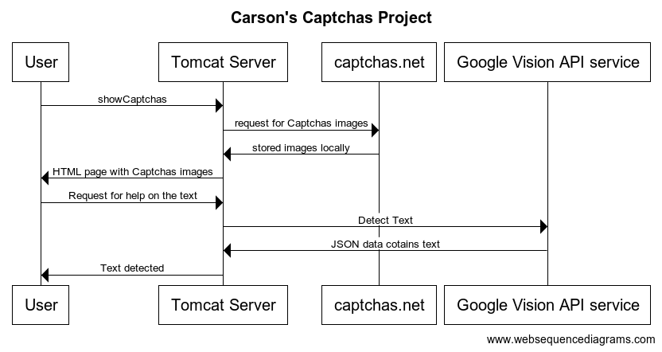
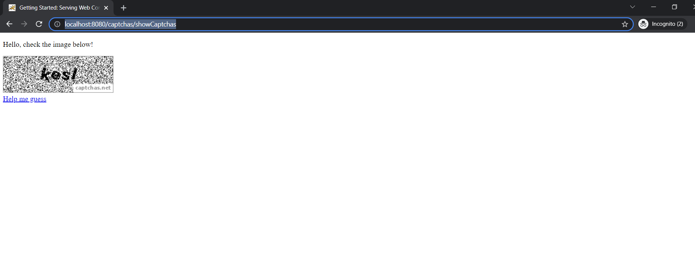

CAPTCHA, an acronym for Completely Automated Public Turing test, is employed to distinguish between humans and computers on websites. Its purpose is to solicit user input and prevent the use of computer bots on certain web platforms.
Various types of CAPTCHAs exist, and for the purpose of this demonstration, we will focus on a simple text-based image CAPTCHA. Several libraries, such as Optical Character Recognition (OCR), Google Vision API, and Amazon Textract, are available to decode text in CAPTCHAs. In this project I plan to use the images generated by captchas.net and feed them to Google Vision API
In this implementation, I employed Tomcat alongside the Spring Boot framework and jQuery. When a user accesses the web page, a request is sent to captchas.net to obtain the CAPTCHA image, which is then saved in the server's folder. Subsequently, a request to the Google Vision API is made to decipher the text within the CAPTCHA
ITry Captchas here
Usage:
